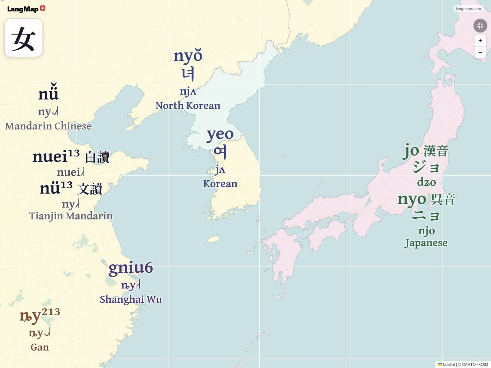

Why does "Ri" become "I" in South Korean names?
- The Chinese character 李 is read "ri" in Korean.
- But in South Korea, it becomes "i" at the beginning of a name.
- In North Korea, the "r" stays. Why?

Contents
- Lee Jung-jae and the missing R
- Korean avoids certain sounds at the beginning
- Put the sound inside, and it can return
- Sometimes R disappears. Sometimes it becomes N.
- This is older than modern South Korea
- Then South and North split
- But what about Ryu Hyun-jin?
- Mongolian has a surprisingly similar problem
- And why is 이 written "Lee"?
Lee Jung-jae and the missing R
Take Lee Jung-jae, the Squid Game star who plays Seong Gi-hun.
His Korean name is:
이정재 (李政宰)
I Jeong-jae
But the Sino-Korean reading of 李 is:
리 (ri)
So why does ri become i?
Korean avoids certain sounds at the beginning
The rule is called:
두음법칙 (頭音法則, dueum beopchik)
the initial-sound rule
The idea is simple:
a sound can be fine inside a word, but avoided at the beginning.
This happens especially clearly in Sino-Korean words.
For example:
리 (ri) → 이 (i)
려 (ryeo) → 여 (yeo)
류 (ryu) → 유 (yu)
로 (ro) → 노 (no)
So:
李: 리 (ri) → 이 (i)
and:
李政宰 → 이정재 (I Jeong-jae)
Put the sound inside, and it can return
Take 女, whose Sino-Korean reading is 녀 (nyeo).
At the beginning:
여자 (女子, yeoja)
woman
But inside another word:
남녀 (男女, namnyeo)
men and women
Same sound.
Different position.
That is the core of the rule.
Sometimes R disappears. Sometimes it becomes N.
Before i or a y-like vowel:
리 (ri) → 이 (i)
Before vowels such as o:
로 (ro) → 노 (no)
For example:
勞動: 로동 (rodong) → 노동 (nodong)
labor
So Korean is not randomly changing Chinese readings.
It is avoiding certain sounds specifically at the beginning.
This is older than modern South Korea
The sound change developed gradually over centuries.
It was already established before Korea was divided.
Modern spelling simply turned an old pronunciation pattern into a rule.
Then South and North split
South Korean standard Korean applies the initial-sound rule.
North Korean standard Korean generally keeps the original initial consonant.
So:
| South | North |
|---|---|
| 이 (i) | 리 (ri) |
| 여자 (yeoja) | 녀자 (nyeoja) |
| 역사 (yeoksa) | 력사 (ryeoksa) |
| 노동 (nodong) | 로동 (rodong) |
Same Chinese characters.
Different standard rules.
The map of 女 shows it at a glance: North Korean 녀, South Korean 여.
But what about Ryu Hyun-jin?
Baseball star Ryu Hyun-jin, formerly of the Los Angeles Dodgers and Toronto Blue Jays, writes his surname:
류 (柳, ryu)
Shouldn't 류 (ryu) become 유 (yu)?
Normally, yes.
But Korean surnames can preserve traditional family forms.
So 류 (ryu) can remain.
Just when the rule looks simple, a family name keeps the older sound.
Mongolian has a surprisingly similar problem
Mongolian also traditionally avoids r at the beginning of native-style words.
So "Russia" is:
Орос (Oros)
rather than a form beginning directly with R.
Korean removes or changes the initial sound:
ri → i
Mongolian puts a vowel before it:
Rus → Oros
Different solution.
Similar pressure:
"R is fine. Just not at the beginning."
And why is 이 written "Lee"?
One final trap.
The Korean surname 이 (i) is usually written Lee in English.
That is simply a conventional Roman spelling.
Korean surnames often use traditional English spellings that do not exactly match modern pronunciation:
이 (i) → Lee
박 (bak) → Park
최 (choe) → Choi
So with Lee Jung-jae, two different things are happening:
李 ri → 이 i: Korean sound rule
이 i → Lee: conventional Roman spelling
Once you separate those two, the mystery becomes much easier.
A tiny rule at the beginning of a word can turn ri into i, divide South and North Korean spelling, and hide centuries of sound history inside a familiar name.